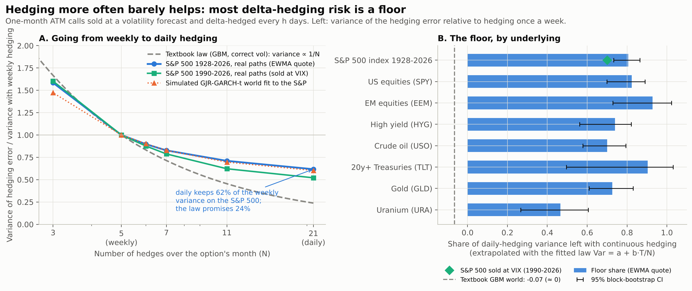
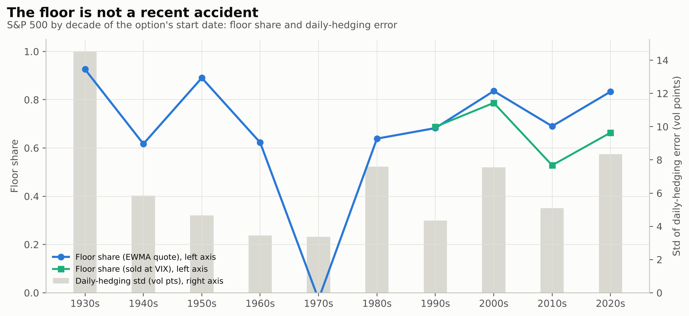
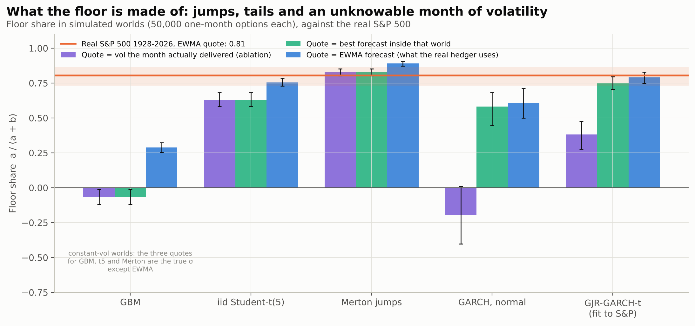
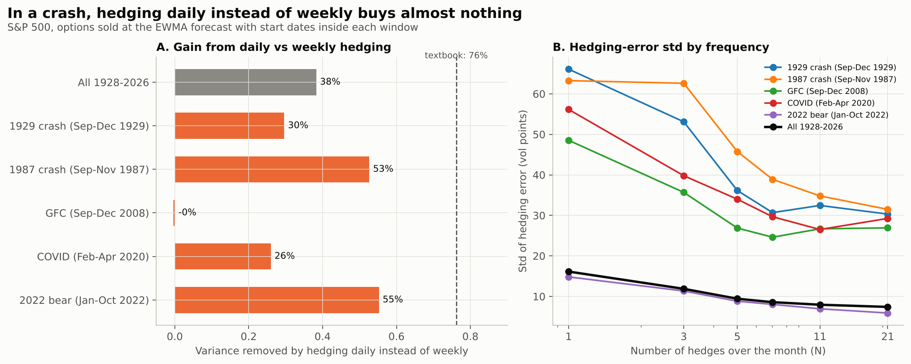
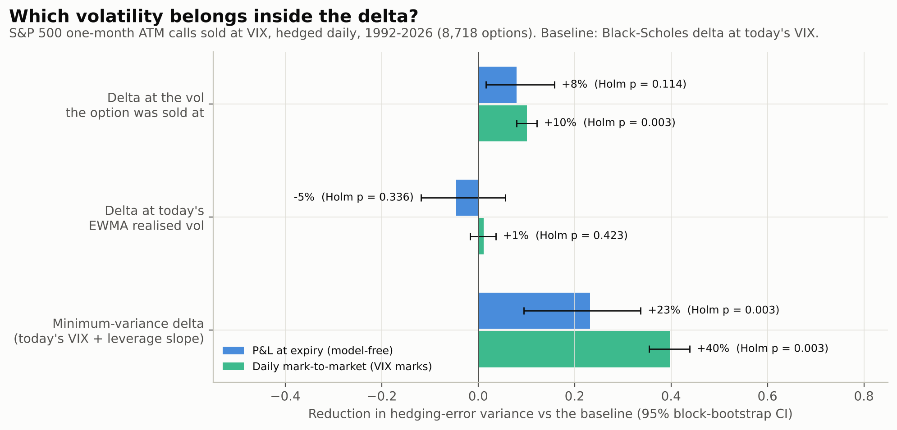
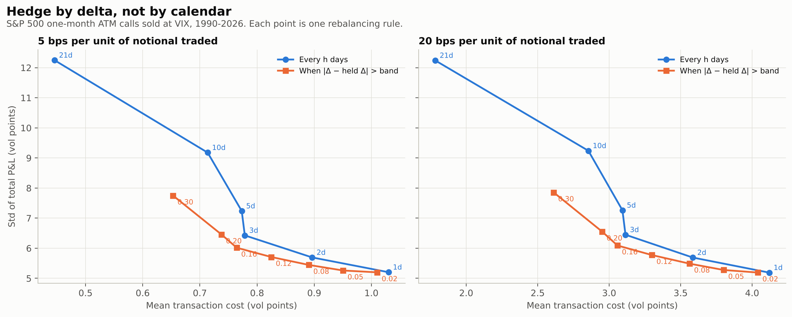
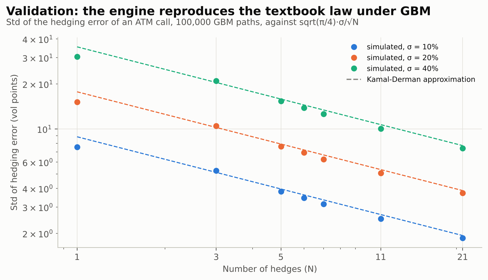

Working paper · Project 16
How much of an option's hedging risk can rebalancing remove? 98 years of the S&P 500, seven asset classes, a factorial of simulated worlds, and a minimum-variance delta
Project 16 of 30 Quant Research Projects · Working paper, November 2026

The textbook says the error of a delta hedge shrinks like 1/√N with the number of rebalances N (Boyle and Emanuel 1980; Kamal and Derman 1999). Hedge daily instead of weekly and the error variance should fall to 5/21 of its weekly value. A desk that believes this hedges as often as costs allow. This paper measures what rebalancing actually buys on real price paths. It sells a one-month at-the-money call at a volatility known on the day, delta-hedges it every h days, and repeats this on every trading day of the S&P 500 from 1928 to 2026 (24,757 options) and of seven ETFs from 2006 to 2026 (US and EM equities, high yield, crude oil, long Treasuries, gold, uranium).
The variance of the hedging error is fitted by the linear law Var = a + b·(T/N). The intercept a is the part that would remain under continuous hedging if the law kept holding below one day. I call a/(a+b) the floor share. It is zero in the textbook world.
Main findings
The engine (src/hedgesim.py) is a reusable, vectorised discrete-hedging simulator. It is validated
against the Kamal–Derman law and put–call parity in the tests, and project 30 (deep hedging) builds on it.
Project 04 asked what volatility a daily delta hedger should have charged, strike by strike: the mean of the hedged P&L. This paper asks about its spread. A market maker who sells an option and hedges it is not exposed to the average month but to this month. The standard advice is that the spread is a discretisation error that more frequent hedging removes. If that were true, the right response to hedging risk would be to trade more, and the only limit would be transaction costs. That is the logic of Leland (1985) and of Whalley and Wilmott (1997).
There is a second source of spread that rebalancing cannot touch. A hedger who sells at σ_q while the market delivers a different volatility earns ½ Σ Γ S² (σ_q² dt − r²). Its expected value does not depend on how often you hedge (Ahmad and Wilmott 2005; Carr's "gamma-weighted variance" accounting). The question is quantitative: how much of real hedging risk is each kind, and what does that imply for how often, and with which delta, a desk should hedge?
I could not find this split measured on a century of index data, across asset classes, with a calibrated simulation that explains it. The closest empirical work is Hull and White (2017), on the minimum-variance delta, which is tested here too.
hedgesim.hedge_short_call sells a European call and holds pos units of the underlying, reset on
the days chosen by a calendar schedule or by a band. It works with r = q = 0, so the hedge
instrument is the forward. A test shows that a 5%/year carry changes the P&L spread by less than 2%.
P&L is divided by the option's vega at inception and multiplied by 100, so it is in volatility points:
an error of 2 is as large as mis-pricing the option by 2 vol points. Options are one month (21 trading
days), at the money, on every trading day (overlapping, so every statistic uses a moving-block bootstrap
with 126-day blocks and 2,000 resamples).
Rebalancing intervals are h ∈ {1, 2, 3, 4, 5, 10, 21} days. With N = ⌈21/h⌉ hedges, the textbook variance is proportional to T/N, not h (h = 4 and h = 5 give 6 and 5 hedges). The frequency law is therefore fitted as Var = a + b·T/N on h = 1…5 (daily to weekly). Under GBM with the correct volatility, the fitted floor share is −0.07 (CI −0.12 to −0.01): the estimator reads zero to within 0.1.
| Series | Period | Options | Source |
|---|---|---|---|
| S&P 500 price index (^GSPC) | 1928-03 to 2026-10 starts | 24,757 | Yahoo, same file as project 03 |
| VIX close | 1990-01 to 2026-09 | 9,244 | CBOE via datasets/finance-vix, same as project 04 |
| SPY, EEM, HYG, USO, TLT, GLD, URA (total return) | 2006–2026 | 3,953–5,106 each | Yahoo, same file as project 01 |
The overlap with projects 01 and 04 is deliberate. The same paths that 01 forecasts and 04 prices are hedged here. Market data ends in November 2026, VIX on 2026-09-22, so the last VIX-quoted option starts in August 2026.
| Underlying | Sample | Std, daily | Std, weekly | Std, once | Weekly→daily gain (CI) | Floor share (CI) |
|---|---|---|---|---|---|---|
| S&P 500, EWMA | 1928–2026 | 7.41 | 9.43 | 16.1 | 38% (30–46%) | 0.81 (0.73–0.87) |
| S&P 500, VIX | 1990–2026 | 5.22 | 7.24 | 12.2 | 48% (39–56%) | 0.70 (0.59–0.80) |
| SPY | 2006–2026 | 7.43 | 9.25 | 13.7 | 36% (26–48%) | 0.82 (0.70–0.89) |
| EEM | 2006–2026 | 11.19 | 12.64 | 19.1 | 22% (1–45%) | 0.93 (0.73–1.02) |
| HYG | 2007–2026 | 4.30 | 5.80 | 8.8 | 45% (36–59%) | 0.74 (0.56–0.82) |
| USO | 2006–2026 | 12.48 | 17.35 | 31.0 | 48% (39–57%) | 0.70 (0.58–0.79) |
| TLT | 2006–2026 | 5.69 | 6.64 | 11.3 | 27% (−7–61%) | 0.90 (0.50–1.03) |
| GLD | 2006–2026 | 6.65 | 8.97 | 13.9 | 45% (34–55%) | 0.73 (0.61–0.83) |
| URA | 2011–2026 | 11.12 | 18.25 | 30.7 | 63% (57–69%) | 0.47 (0.27–0.61) |
| GBM, correct vol | simulated | 3.51 | 7.23 | 14.1 | 76% | −0.07 |
Standard deviations are in vol points. "Once" means hedging only at inception. Source:
results/floor_shares.csv, results/frontier_summary.csv.
H1 holds for all eight underlyings. Even with a Bonferroni bound across the eight (one-sided
0.05/8, stricter than Holm), every upper limit of the gain is below the textbook 76%. The highest is
uranium's, at 71%. H2 holds: the S&P 500 floor share is 0.81, with lower limit 0.73, above 0.5.
No bootstrap resample out of 2,000 gives a floor share at or below zero for any underlying, and the
Bonferroni lower bounds run from 0.18 (uranium) to 0.71 (S&P 500). Columns share_lo_bonf,
gain_hi_bonf and p_floor_le_0 in results/floor_shares.csv.
Uranium is the exception. Rebalancing helps more there than anywhere else (63%), and its floor share is the lowest (0.47). A plausible reading, not tested here, is that uranium's large moves come as trends lasting several days that a daily hedge can follow, rather than as one-day gaps.
Robustness (results/robustness_floor.csv). Strikes one standard deviation in or out of the money:
S&P floor shares 0.82 and 0.82. Three-month options (hedged up to every 63 days): 0.84–0.92 on the
S&P 500, 0.86–0.93 on USO. By decade (results/spx_by_decade.csv, Figure 6) the S&P floor share is
between 0.70 and 0.94 in every decade except the 1970s (0.24), a decade of low and slowly drifting
volatility in which EWMA forecasts were unusually accurate.

Five simulated worlds, 200,000 days each, cut into 50,000 one-month options and hedged with the same
engine (src/simulation.py). The GARCH worlds are fitted by maximum likelihood to the S&P 500
1928–2026 (results/sim_garch_params.csv; GJR: α = 0.031, γ = 0.106, β = 0.907, ν = 6.0).

| World | Quote = what the month delivered | Quote = best forecast | Quote = EWMA |
|---|---|---|---|
| GBM | −0.07 | −0.07 | 0.29 |
| iid Student-t(5) | 0.63 | 0.63 | 0.75 |
| Merton jumps (4/yr, −3% ± 4%) | 0.83 | 0.83 | 0.89 |
| GARCH, normal | −0.19 | 0.58 | 0.61 |
| GJR-GARCH-t (S&P fit) | 0.38 | 0.75 | 0.79 |
| Real S&P 500 | — | — | 0.81 |
Three readings.
Prediction P1 fails. The iid formula ek/(2+ek) with the real standardised kurtosis (0.24) predicts a floor share of 0.11, against 0.81 measured. After scaling by the month's own volatility, daily S&P returns are close to Gaussian (Andersen et al. 2001 report the same for realised-volatility-standardised returns). The floor is a cross-month phenomenon: which volatility the month will bring, and when its large moves arrive relative to gamma. It is not a within-month tail effect that a kurtosis statistic could capture.

| Window (start dates) | Options | Std daily | Std weekly | Weekly→daily gain |
|---|---|---|---|---|
| Sep–Dec 1929 | 81 | 30.3 | 36.2 | 30% |
| Sep–Nov 1987 | 63 | 31.5 | 45.8 | 53% |
| Sep–Dec 2008 | 85 | 26.9 | 26.9 | 0% |
| Feb–Apr 2020 | 62 | 29.3 | 34.0 | 26% |
| Jan–Oct 2022 | 209 | 5.9 | 8.8 | 55% |
| All 1928–2026 | 24,757 | 7.4 | 9.4 | 38% |
S&P 500, EWMA quote. These windows hold few, heavily overlapping options, so the numbers are descriptive. They come without confidence intervals and enter no test. In 2008 the result is the same for SPY (2%) and worse for EEM (−41%): hedging EM equities daily instead of weekly added risk, because a daily hedge re-sized into every reversal. In 2020, sold at VIX instead, the S&P gain was 38%. The 2022 bear market, a slow decline without a volatility shock, looks like an ordinary period (55%).

S&P 500, one-month ATM calls sold at VIX, hedged daily, start dates 1992–2026 (the first two years of VIX are the estimation window for the slope). Four delta rules, same premium, same paths:
| Delta rule | Std terminal | Mean P&L | Variance change vs today's-VIX delta (CI) | Holm p |
|---|---|---|---|---|
| Black–Scholes at today's VIX (desk standard, baseline) | 5.45 | 4.17 | — | — |
| Black–Scholes at the vol the option was sold at | 5.23 | 4.06 | −8% (−16% to −2%) | 0.11 |
| Black–Scholes at today's EWMA realised vol | 5.57 | 3.97 | +5% (−6% to +12%) | 0.34 |
| Minimum-variance: today's VIX + vega · β̂ / S | 4.78 | 3.72 | −23% (−34% to −9%) | 0.003 |
β̂ is the expanding-window OLS slope of daily VIX changes on S&P log returns, using only data before
the sale date. It moves from −0.86 in 1992 to −1.16 in 2026 (results/leverage_slope.csv): a 1% fall in
the index has come with a VIX rise of about one point. The adjustment vega·β̂/S lowers an ATM call delta
by about 0.1, similar in size to the adjustment Hull and White (2017) report for S&P 500 options.
H3 holds. The minimum-variance delta is the only rule that beats the baseline after Holm correction
over the six comparisons in results/which_delta_tests.csv. Two caveats. (i) Its mean P&L is 0.45 vol
points lower, because holding less of a rising index costs the equity drift. (ii) The daily
mark-to-market score (−40%) marks the option at VIX, the same series the slope is estimated on, so it
flatters the rule. The terminal score uses only premium, payoff and hedge gains, so it is model-free
and is the one I rely on.

Costs are proportional: k bps of notional per unit traded, including the trades that set up and unwind the hedge. For the S&P 500 sold at VIX (1990–2026):
| Rule | Mean cost at 5 bps | Std of total P&L |
|---|---|---|
| Every day | 1.03 | 5.20 |
| Every 5 days | 0.77 | 7.24 |
| Band 0.16 | 0.76 | 6.02 |
| Band 0.02 | 1.01 | 5.20 |
H4 holds. At equal cost the band rule has a lower standard deviation than every calendar rule
except daily, where the two coincide. Against weekly hedging the difference is −1.22 vol points (CI
−1.61 to −0.86) at 5 bps, and −1.17 (CI −1.56 to −0.81) at 20 bps (results/costs_band_vs_calendar.csv).
H5 is rejected. Minimising mean cost + λ·std, the best calendar rule at 5 bps is daily for every
λ ∈ {0.5, 1, 2}, and so is the best rule for all seven ETFs at 5 bps (results/costs_best.csv). Only at
20 bps does a calendar rule of 2–3 days win. The reason is the flip side of Result 1. Halving the number of
trades does not halve the cost: going from 21 hedges to 5 cuts it only from 1.03 to 0.77 vol points,
because most of the turnover is the set-up and unwind trades plus the large re-hedges after big moves,
which a weekly hedge also has to make. Frequent hedging is a poor tool, but it is also a cheap one.

results/derman_check.csv). The simulated values sit
slightly below the formula, which is an asymptotic approximation. At N = 1 the formula overstates the
error by 15%, as expected for an approximation built for many rebalances. The mean P&L is zero within
0.2 vol points.bs.py to 1e-12.pytest -q tests: 12 tests pass.I reviewed the first draft as a hostile referee would. Points raised and what was done:
pip install -r requirements.txt
bash run_all.sh # about 2 minutes on 4 cores; writes results/, figures/ and runs the tests
Seeds are fixed (16, 1616, 1603, 1604). Every number in this README is in a CSV in results/.
| Script | Produces |
|---|---|
src/hedgesim.py |
the engine (no outputs) |
src/frontier.py |
frontier_paths.csv.gz, frontier_summary, floor_shares, spx_by_decade, stress_windows, robustness_floor |
src/simulation.py |
sim_factorial, sim_garch_params, derman_check |
src/which_delta.py |
which_delta, which_delta_tests, which_delta_paths.csv.gz, leverage_slope |
src/costs.py |
costs_frontier, costs_best, costs_band_vs_calendar |
src/figures.py |
figures/fig1–fig7 |
hedgesim.py (any delta_fn, schedule or band) and should be judged against
the floor measured here, not against zero.Ahmad, R. and Wilmott, P. (2005). Which free lunch would you like today, sir? Delta hedging, volatility arbitrage and optimal portfolios. Wilmott Magazine. · Andersen, T., Bollerslev, T., Diebold, F. and Ebens, H. (2001). The distribution of realized stock return volatility. JFE. · Bollerslev, T. (1986). J. Econometrics. · Boyle, P. and Emanuel, D. (1980). Discretely adjusted option hedges. JFE. · Carr, P. and Madan, D. (1998). Towards a theory of volatility trading. · Glosten, L., Jagannathan, R. and Runkle, D. (1993). JF. · Holm, S. (1979). Scand. J. Stat. · Hull, J. and White, A. (2017). Optimal delta hedging for options. J. Banking & Finance. · Kamal, M. and Derman, E. (1999). When you cannot hedge continuously: the corrections to Black–Scholes. Risk. · Künsch, H. (1989). Ann. Stat. · Leland, H. (1985). Option pricing and replication with transaction costs. JF. · Merton, R. (1976). JFE. · Whalley, A. E. and Wilmott, P. (1997). An asymptotic analysis of an optimal hedging model for option pricing with transaction costs. Math. Finance.
Code: MIT. Text and figures: CC BY 4.0.